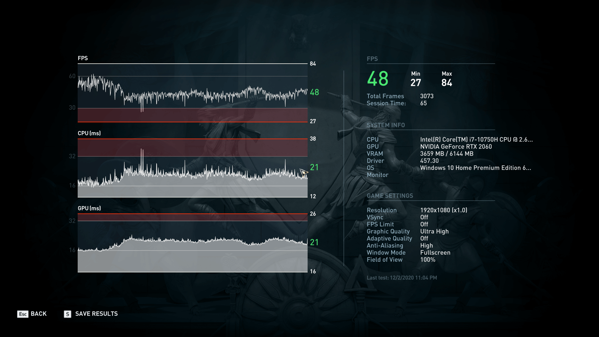
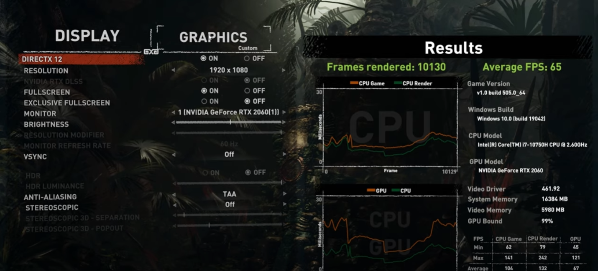

Результаты “Охотника” в синтетике можете увидеть в других страницах. И информация для тех кто интересуется альтернативным применением игрового железа — в майнинге эфира без какой-то дополнительной настройки он выдал чуть больше 20 MH/s.
Assassin’s Creed: Odyssey
Но пора переходить к играм. Первая на очереди — Assassin’s Creed: Odyssey. Да-да, я знаю, что уже вышла “Вальгалла”, но играть в неё у меня большого желания нет, а покупать только ради нескольких тестов что-то тоже не хочется. Итак, на Ultra-настройках графики ноут немного не дотянул до 50 кадров в секунду по среднему fps. Не очень много, но не забываем, что ещё десятку сверху можно легко добить, просто переключив качество облаков на один шаг ниже. Зато со стабильностью всё в порядке — даже по показателю 1% минимальных fps просадки случались минимум до 38 кадров в секунду. Для сингловой игры вполне себе достаточно.

The Witcher 3
Witcher 3 я тестировал в API DirectX 12. Результаты оказались близки к тем, что мы видели в предыдущей игре. На “Ультра” настройках Hunter совсем немного не дотянул до 50 кадров секунду по среднему значению, а минимальный не опускался ниже 40. Время кадра обычно тоже держится на стабильном уровне, но в одном из моментов встроенного бенча есть место, где игра постоянно спотыкается с единичным падением до 2 кадров в секунду. Не знаю с чем это связано, потому что во время самого геймплея подобного поведения не замечал.
.png) Shadow of The Tomb Raider
Первая игра в подборке, где есть возможность включить эффекты на базе трассировки лучей — ну или то самое RTX. Посмотреть на результаты лично мне было вдвойне интересно, потому что про 2060 нередко говорят, что по-факту, она не годится для игры с RTX-эффектами, несмотря на то, что формально у неё есть для этого отдельные ядра и, соответственно, аппаратная поддержка обработки трассировки лучей. Очевидно, многое тут зависит от самой игры, но погонять в Ларку на ней точно можно. Без лучей я получил почти 80 кадров в секунду на “Ультра” настройках графики.
Shadow of The Tomb Raider
Первая игра в подборке, где есть возможность включить эффекты на базе трассировки лучей — ну или то самое RTX. Посмотреть на результаты лично мне было вдвойне интересно, потому что про 2060 нередко говорят, что по-факту, она не годится для игры с RTX-эффектами, несмотря на то, что формально у неё есть для этого отдельные ядра и, соответственно, аппаратная поддержка обработки трассировки лучей. Очевидно, многое тут зависит от самой игры, но погонять в Ларку на ней точно можно. Без лучей я получил почти 80 кадров в секунду на “Ультра” настройках графики.

После их активации на средний уровень, производительность упала, но 69 fps всё ещё вполне достаточно для того чтобы с комфортом пройти игру. Впрочем, в динамике я большой разницы не замечаю, если только не поставить два варианта рядом. Так что, кому-то возможно лишний десяток fps окажется предпочтительнее чем более честное освещение и естественные тени.
WoT
И ещё одна игра с поддержкой трассировки. Кстати, наконец-то дошёл до того, чтобы начать в нее играть. Крутая игра, мне нравится, если кто-то ещё не играл, то рекомендую. Но хватит лирических отступлений, давайте про то, как ноут с ней справляется.
.png) На “Высоких” настройках, которые в случае Control являются одновременно и максимальными снова получилось чуть меньше 50 кадров в секунду — то есть, примерно на уровне AC:O и Borderlands 3. Учитывая, что там игры с открытым миром, а здесь у нас довольно небольшие локации, можно порассуждать про не самую лучшую оптимизацию. Даже с учётом хорошей интерактивности и разрушаемости окружения.
Но это без RTX. А вот если включить эффекты трассировки на средний уровень, то fps падает примерно на те же 10 кадров в секунду. Высокие на карте уровня ноутбучной 2060 лучше точно
CS:GO
За сетевые и киберспортивные дисциплины отвечал CS:GO. Собственно, даже на максимальных настройках графики в Full HD Honor Hunter V700 выжимает из неё больше 300 кадров в секунду по среднему значению. А это значит, что частота дисплея в 144 Гц тут как раз пригодится. Точнее, получится действительно реализовать преимущества, которые она нам даёт. Естественно, при условии, что скилл позволяет это сделать, чего я точно не могу сказать про себя.
На “Высоких” настройках, которые в случае Control являются одновременно и максимальными снова получилось чуть меньше 50 кадров в секунду — то есть, примерно на уровне AC:O и Borderlands 3. Учитывая, что там игры с открытым миром, а здесь у нас довольно небольшие локации, можно порассуждать про не самую лучшую оптимизацию. Даже с учётом хорошей интерактивности и разрушаемости окружения.
Но это без RTX. А вот если включить эффекты трассировки на средний уровень, то fps падает примерно на те же 10 кадров в секунду. Высокие на карте уровня ноутбучной 2060 лучше точно
CS:GO
За сетевые и киберспортивные дисциплины отвечал CS:GO. Собственно, даже на максимальных настройках графики в Full HD Honor Hunter V700 выжимает из неё больше 300 кадров в секунду по среднему значению. А это значит, что частота дисплея в 144 Гц тут как раз пригодится. Точнее, получится действительно реализовать преимущества, которые она нам даёт. Естественно, при условии, что скилл позволяет это сделать, чего я точно не могу сказать про себя.
.png) Итоги
На этом мои тесты закончились. Получилось не очень много, но этого хватит чтобы примерно понять на что он способен. Не стал отдельно рассказывать про автономку, потому что тут ничего нового нет — играть от батареи точно не получится, ну если только минут 30 вам хватит. В офисе и браузере пару-тройку часов он поживёт, если отключить всё лишнее вроде подсветки и перевести систему в экономичный режим. Плюс не упомянул ещё фишку с сопряжением ноута со смартами Honor — просто не оказалось под рукой подходящего смартфона чтобы показать.
Итоги
На этом мои тесты закончились. Получилось не очень много, но этого хватит чтобы примерно понять на что он способен. Не стал отдельно рассказывать про автономку, потому что тут ничего нового нет — играть от батареи точно не получится, ну если только минут 30 вам хватит. В офисе и браузере пару-тройку часов он поживёт, если отключить всё лишнее вроде подсветки и перевести систему в экономичный режим. Плюс не упомянул ещё фишку с сопряжением ноута со смартами Honor — просто не оказалось под рукой подходящего смартфона чтобы показать.
В целом аппарат мне понравился. Достаточно мощный для того чтобы в Full HD выкручивать всё на максимум, видосы в DaVinci тоже крутит быстро, хотя если если брать ноут конкретно под монтаж, то я бы искал с видеокартой у которой памяти побольше. 6 ГБ — это уже впритык для разрешений выше чем Full HD. Экран, сборка, клава — это мне всё тоже понравилось. Единственное, хотелось бы, конечно за эту цену в базе диск на терабайт.